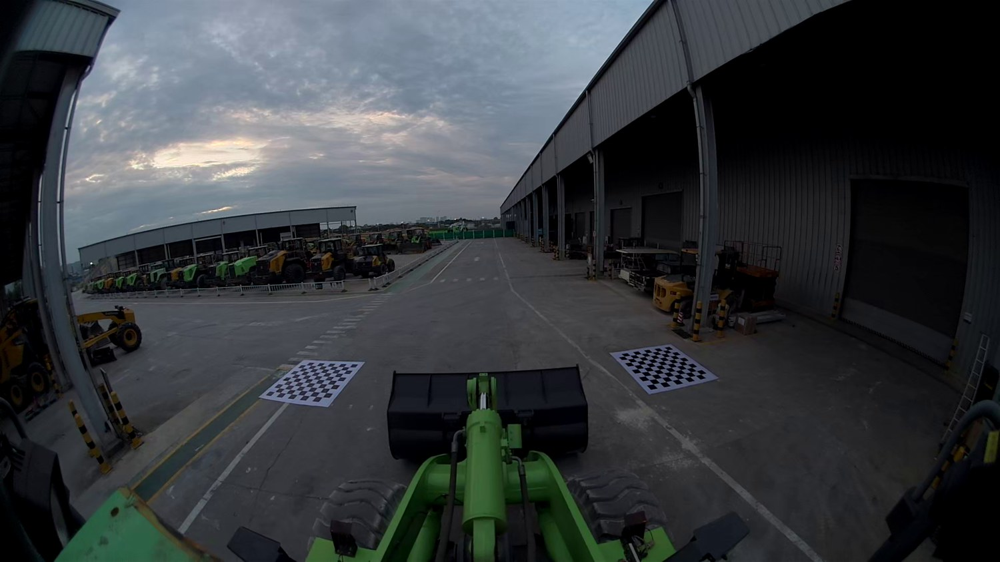
工程车辆四路鱼眼相机 · BEV 环视拼接
360车载全景影像拼接
基于前、后、左、右四路鱼眼相机图像，完成去畸变、地面单应性投影、区域融合、上机展示和低延迟处理升级。
OpenCVFisheyeHomographyBEV Fusion
相关参数
4 路输入相机
每路 8 个外角点标定点
1.352pxback 重投影误差
95.9ms优化后处理均值
输入图像
四路鱼眼图像作为 BEV 拼接输入，页面采用等比缩放展示，避免裁掉有效信息。
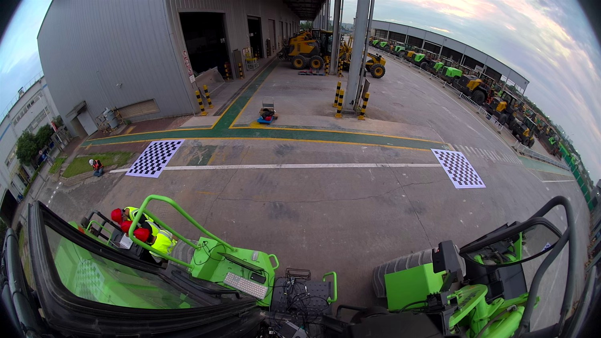
左侧原始图像
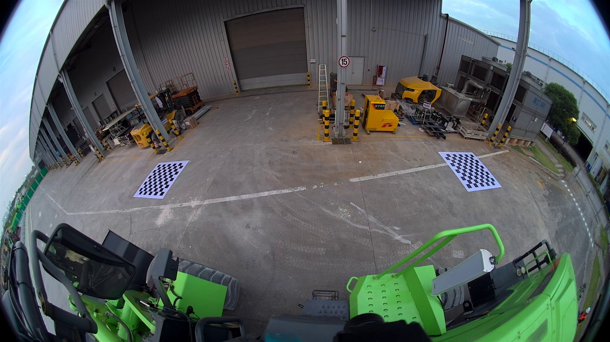
右侧原始图像
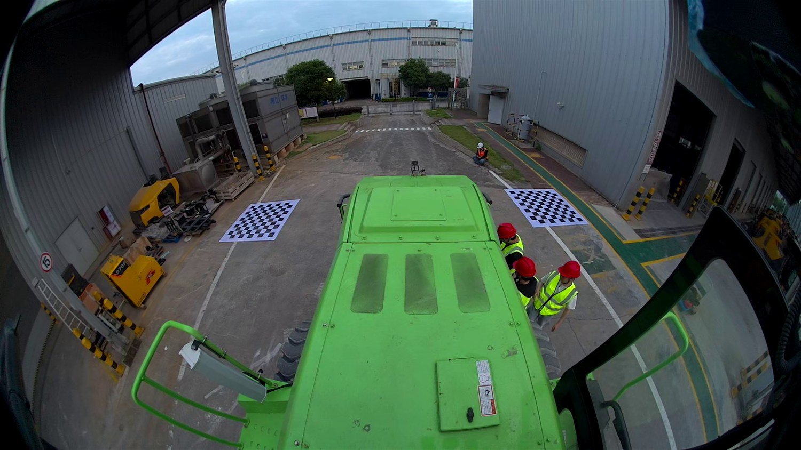
后向原始图像
结果展示
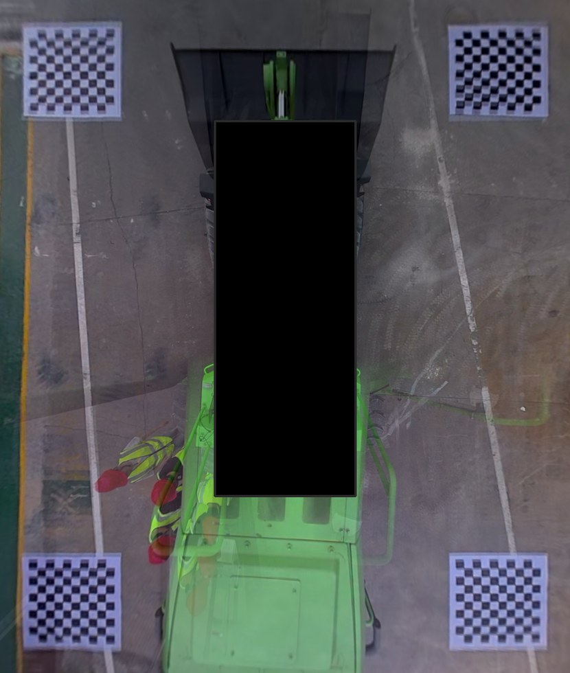
基础 BEV 融合结果
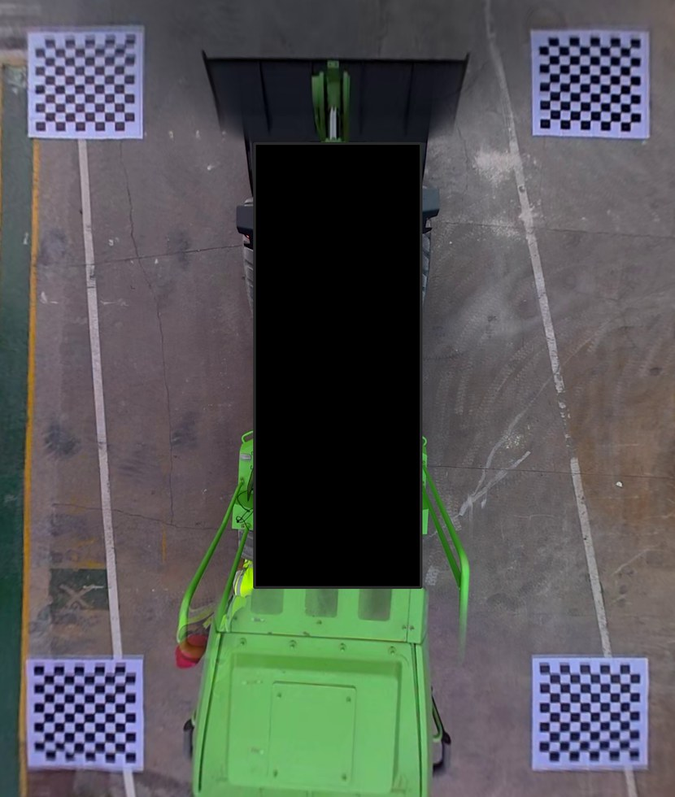
ownership-prior 区域融合
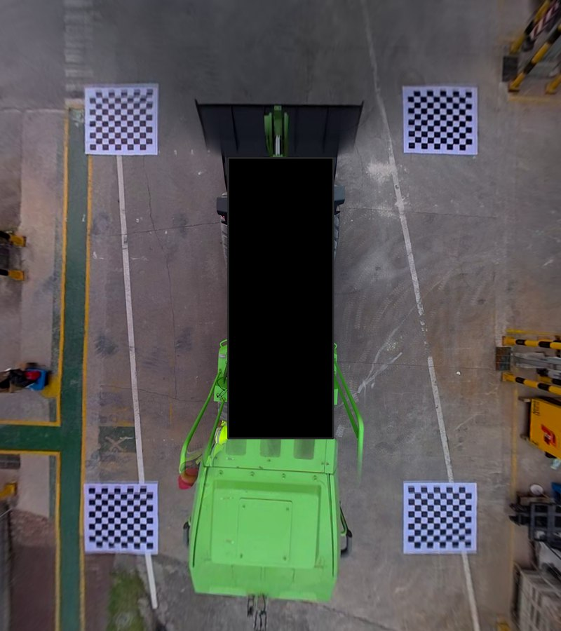
extended safe 输出
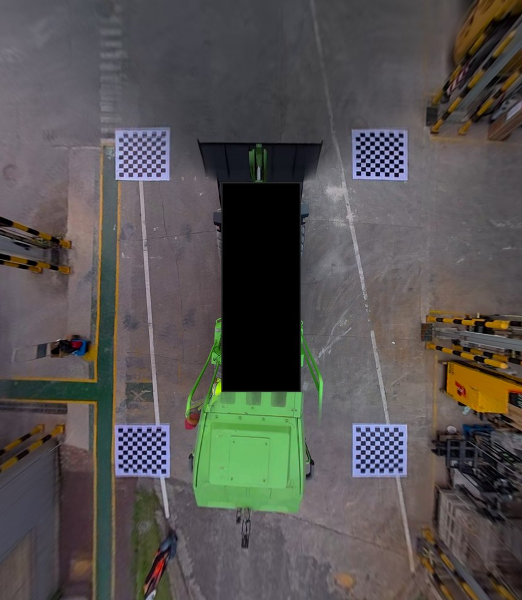
extended wide 输出
上机实测
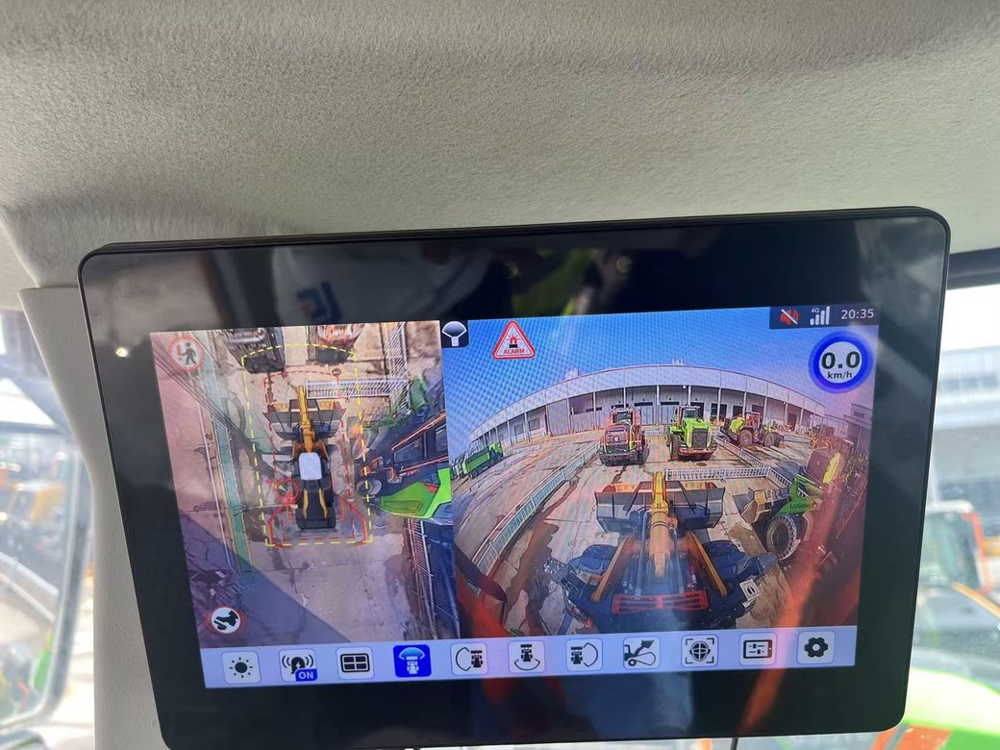
前向上机画面
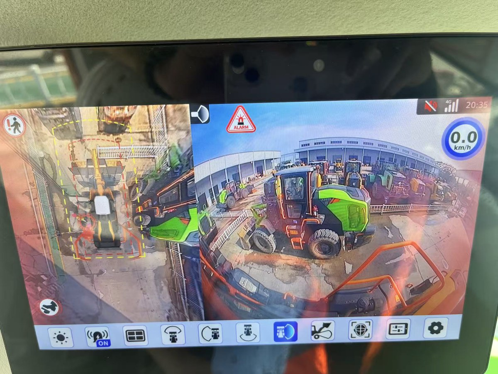
左侧上机画面
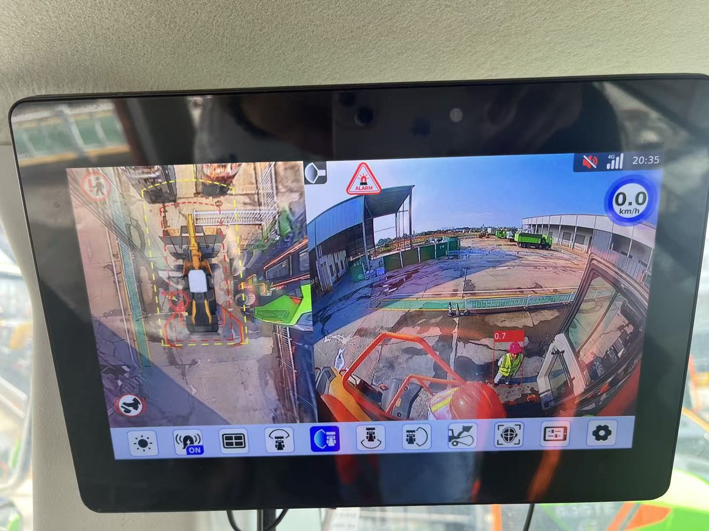
右侧上机画面
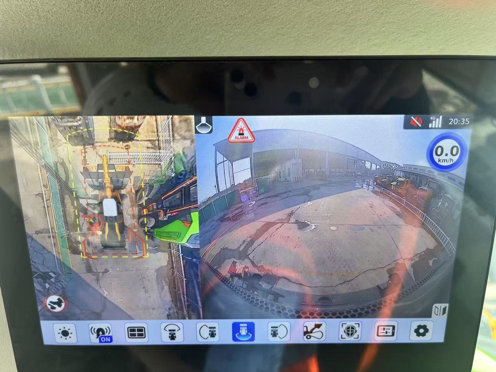
后向上机画面
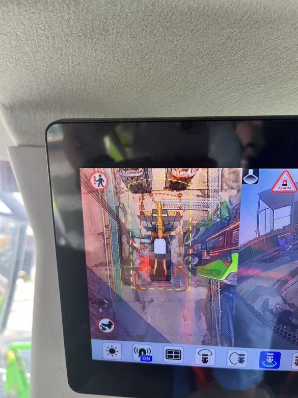
上机鸟瞰输出
视频流低延迟升级
从离线拼接走向视频流处理
在原始拼接链路上补充四路 UDP 视频流输入与运行接口，并围绕 warp、bottom multiH、blend 和内存分配环节做处理耗时优化。
- 原始处理均值约 1025.1ms，输出约 0.98 FPS。
- 优化后处理均值约 95.9ms，输出约 10.43 FPS。
- 四路端口接口按 front / left / right / bottom 分离，便于接入多摄像头视频流。
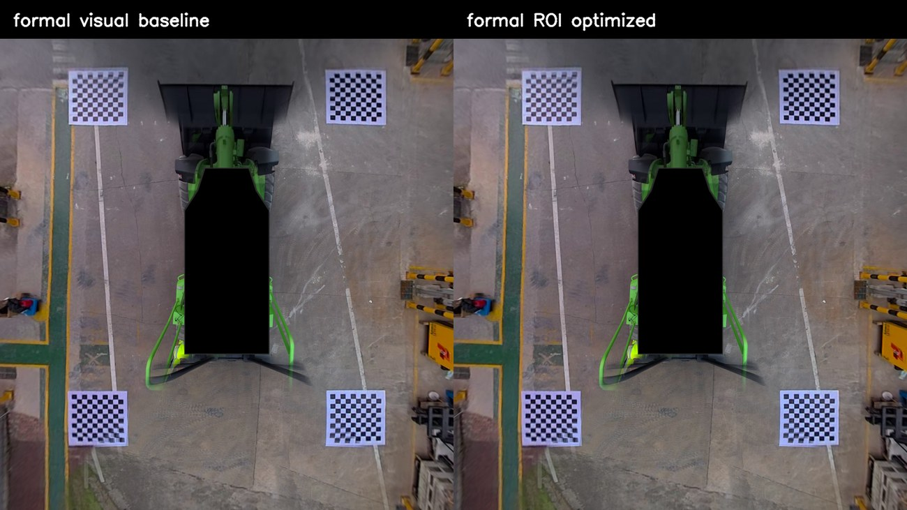
优化前后对比
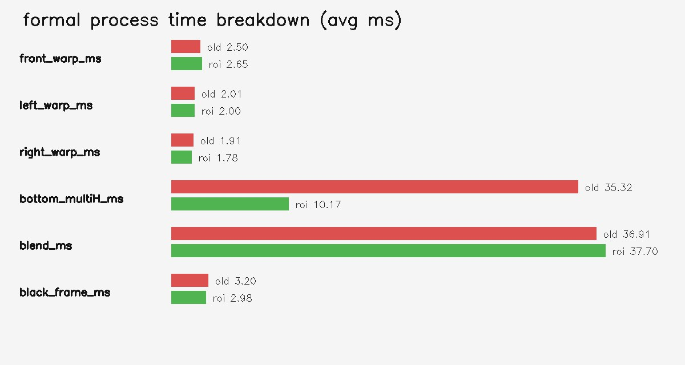
处理耗时分解
算法流程
相机输入采集四路鱼眼图像并统一标定点配置。
几何映射去畸变后通过地面单应性投影到 BEV 坐标系。
区域融合结合有效区域 mask、距离权重与 ownership-prior 降低重影。
展示输出生成多尺度 BEV 结果，并接入上机和视频流演示链路。